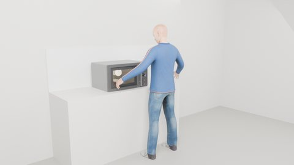
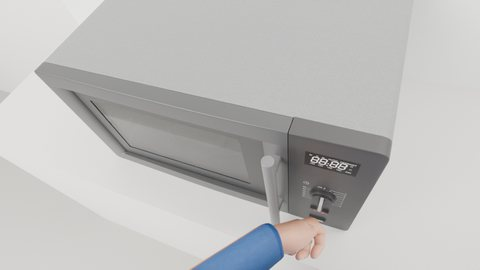
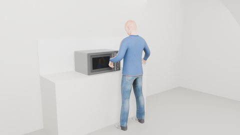
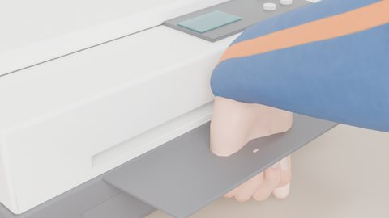
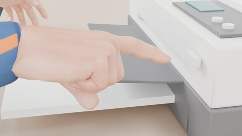
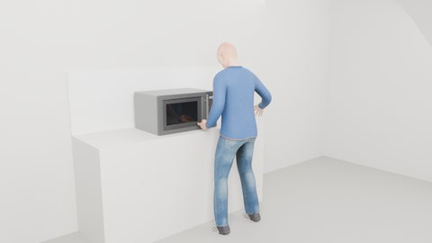
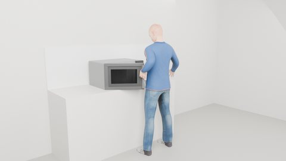
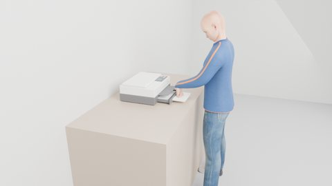
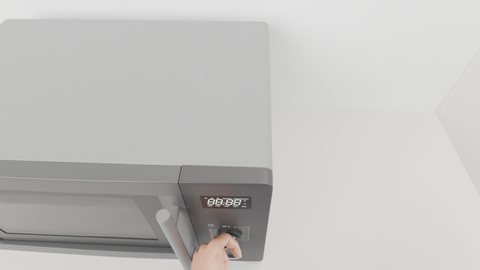
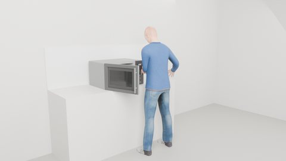

Action primitives
The executor expands every action sentence into these steps (hand, target anchor, grip, duration, mechanism); they are not the action space. Pictures are frames from the recorded runs.

microwave_use · a25_wait · external view · 26.5 s
idle
stand still; device effects may play

microwave_use · a16_look_timer_knob · ego view · 18.9 s
look_at
turn head and gaze to a target (runs alongside hand steps)

microwave_use · a03_reach_door · external view · 1.8 s
reach
move the hand to a stand-off in front of the anchor

printer_use · a04_align_paper_tray · detail view · 3.2 s
pregrasp
close in and align the grip on the anchor

printer_use · a20_press_ok_button · detail view · 23.6 s
press
push the fingertip along the normal; the key answers in MuJoCo

printer_use · a21_release_ok_button · detail view · 24.2 s
release
back off from the anchor

microwave_use · a24_left_back · external view · 23.8 s
retreat
return the hand to the side

microwave_use · a05_pull_door · external view · 4.2 s
pull
hand attached to a part: drive its joint (open / out)

printer_use · a14_push_paper_tray · external view · 17.6 s
push
hand attached to a part: drive its joint (close / in)

microwave_use · a18_turn_timer_knob · ego view · 20.0 s
rotate
hand attached to a part: turn its hinge

microwave_use · a09_move_bowl · external view · 9.8 s
pick_place
grasp a prop, lift, carry, set down on an anchor
Grip templates
Finger curl per template (thumb, index, middle, ring, pinky; bar = curl 0–1).
open
thumb abd. 0 rad · —
relaxed
thumb abd. 0.1 rad · —
index_point
thumb abd. 0.25 rad · index_tip
handle_wrap
thumb abd. 0.7 rad · palm
bar_hook
thumb abd. 0.5 rad · palm
pinch
thumb abd. 0.8 rad · pinch_center
open_palm
thumb abd. 0.2 rad · palm
bar_grip
thumb abd. 0.7 rad · palm
knob_grip
thumb abd. 0.7 rad · palm
pinch_side
thumb abd. 0.8 rad · pinch_center